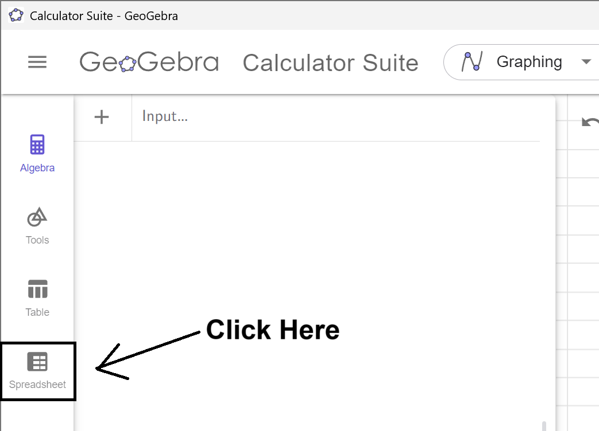
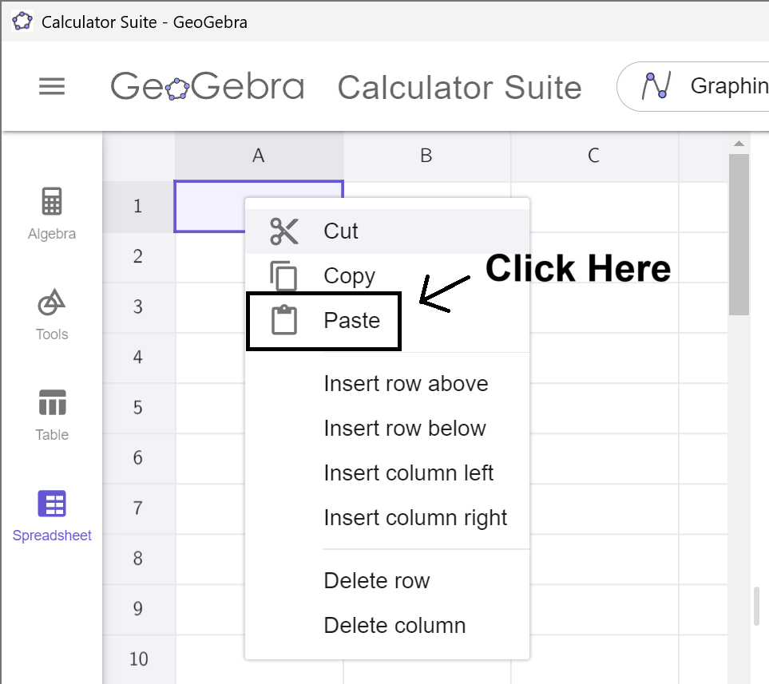

Creating Frequency Histograms
In the previous section, we used tables to summarize the frequency of data points within specific classes. However, humans are naturally drawn to visual representations, which are often more effective than scanning a table of numbers that might seem meaningless. In this section, we will learn how to visualize frequency distributions using frequency histograms. Histograms play a crucial role later in this course, as they help connect the concepts of probability and the area under a curve. Therefore, it’s essential to understand how ts construct and interpret histograms now.
Frequency Histograms
What is a Frequency Histogram?
A frequency histogram is a type of bar graph used to visualize the frequency distribution of data. Below are its key features:
- The \(x\)-axis represents the data values, with tick marks indicating the class boundaries of the frequency distribution.
- The \(y\)-axis represents the frequencies of the classes. The scale always starts at 0, but the other tick marks are determined by the data and are used to scale the heights of the bars.
- Each bar represents a class. The base of the bar spans the range of values for that class, while the height corresponds to the frequency of the class.
- The bars of successive classes touch each other.
- If any class has a frequency of \(0\), no bar is drawn for that class.
Traditionally, a student or researcher had to first build a frequency distribution and then construct the frequency histogram from the distribution. Modern statistical programs (and our GeoGebra tools) build the distribution in the background and just display the histogram. Our next example shows how to precisely do this.
Example
Using the data on Tornado deaths in Tennessee from in How to Create Frequency Distributions, create a
Frequency Histogram that has 8 classes.
Solution
First, click on the Copy Data to Clipboard button and a popup
should appear that indicates the copy was successful.
Next, open the Histogram Generator Tool by clicking on this link or by going to the GeoGebra Tools module and
clicking the link provided there. Once Frequency Distribution Tool is
opened, click on the Spreadsheet tab.

Click on the A1 Cell, and right click to open
up the Context Menu.

Select Paste from the Menu, and the data will copy into the
spreadsheet. (This may take a moment to load. Please be
patient.)
Notice that the data in which we are interested
is in column B. Remember this! Click on the Spreadsheet tab to hide the
data.
Notice that the tool is set by default to column A. If we click on the dropdown box and select column B, the smallest data point (in this case, 0) will load into the Lower Boundary textbox. Notice that, like the Frequency Distribution, the Add an Extra Class checkbox is clicked on by default.
We need to specify either a class width or the number of classes. We saw in Example 4 in How to Create Frequency Distributions that if we choose 8 classes, we get a class width of 10. So, let's enter in 8 for Class Width, and 10 will autofill in for the Number of Classes. Notice that the last class does not contain the maximum value of the data set; therefore, we can uncheck the Add an Extra Class checkbox. If you have everything set up correctly, the Histogram Generator Tool will look like this.
Finally, use the textboxes to update at least the title and x-axis label so your reader knows what data your histogram describes. For my example, I will also update the y-axis label.
Interpretation
The base of the bars indicate which class they belong to. For example, the base of the second bar is starts at 10 and ends at 20. This represents the class 10 to 19 in the frequency distribution. The height of the bar gives the frequency, but it isn't always easy to read an exact number from the graph.
$$\tag*{\(\blacksquare\)}$$
Relative Frequency Histograms
Each type of frequency distribution can be converted into a histogram. All that changes is the height of the bars and the labels and the values on the \(y\)-axis. For relative frequency histograms, the \(y\)-axis will always start at 0 and end and 1 to represent have 0% to 100% of the data. The next example will show you how to convert our frequency histogram from to a relative frequency histogram.
Example
Using the data on Tornado deaths in Tennessee from in How to Create Frequency Distributions, create a Relative Frequency Histogram that has 8 classes.
Solution
If you don't have the data loaded from above, load it now. We will still have column B selected, Number of Classes set to 8, and unselect the Add an Extra Class checkbox.
All you have to do to convert your \(y\)-axis to relative frequencies is to check the Relative Frequencies Checkbox, and your \(y\)-axis will update with the correct values. I will also update the \(y\)-axis to be labeled as "Percentage of Years."
Important Note
If you compare the frequency histogram from with this relative frequency histogram, they are identical except for the labeling of the \(y\)-axis. Both histograms have the same shape, but the frequency histogram shows the number of data points in each class, while the relative frequency histogram shows the percentage of data in each class.
$$\tag*{\(\blacksquare\)}$$
Cumulative Frequency Histograms
For cumulative frequency histograms, the height of each bar will represent the cumulative frequency of the distribution. Our next example will show you how to create one in the Histogram Generator Tool.
Example
Using the data on Tornado deaths in Tennessee from in How to Create Frequency Distributions, create a Relative Frequency Histogram that has 8 classes.
Solution
If you don't have the data loaded from above, load it now. We will still have column B selected, Number of Classes set to 8, and unselect the Add an Extra Class checkbox.
All you have to do to convert your \(y\)-axis to cumulative frequencies is to check the Cumulative Frequencies Checkbox, and the heights of your bars will update.
Important Note
If you compare the frequency histogram from with this cumulative frequency histogram, they differ only in bar heights. Both use the same \(y\)-axis labels, but the frequency histogram shows the number of years in each category, while the cumulative frequency histogram shows the running total up to that class.
$$\tag*{\(\blacksquare\)}$$
Cumulative Relative Frequency Histograms
For cumulative relative frequency histograms, the height of each bar will represent the running total for the relative frequencies of the distribution. Our next example will show you how to create one in the Histogram Generator Tool.
Example
Using the data on Tornado deaths in Tennessee from in How to Create Frequency Distributions, create a Relative Frequency Histogram that has 8 classes.
Solution
If you don't have the data loaded from above, load it now. We will still have column B selected, Number of Classes set to 8, and unselect the Add an Extra Class checkbox.
All you have to do to convert your \(y\)-axis to cumulative relative frequencies is to select both the Relative Frequencies Checkbox and the Cumulative Frequencies Checkbox, and the histogram will update. I will also update the \(y\)-axis label to read "Percentage of Years."
Important Note
If you compare the cumulative histogram from Example 3 with this relative cumulative frequency histogram, they are identical except for the labeling of the \(y\)-axis. Both histograms have the same shape, but the cumulative frequency histogram shows the running total for the number of years, while the relative cumulative frequency histogram shows running total for the percentage of data.
$$\tag*{\(\blacksquare\)}$$